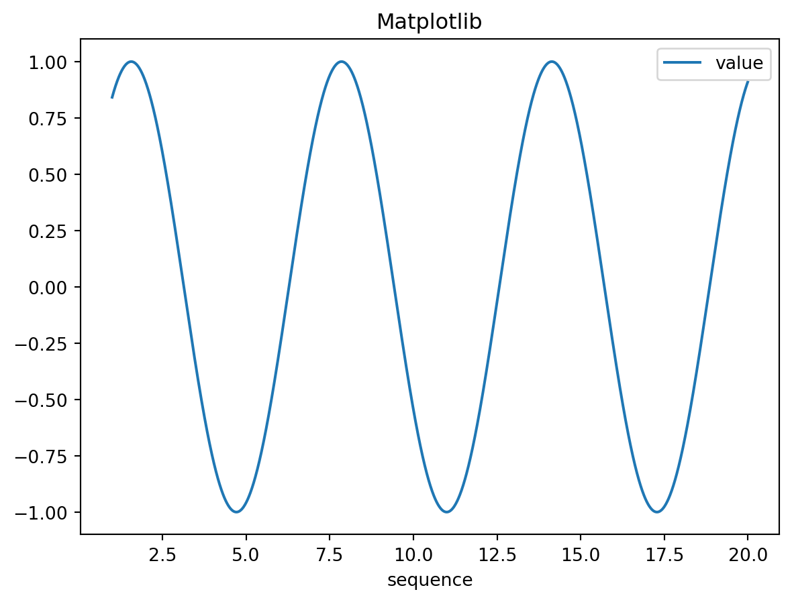
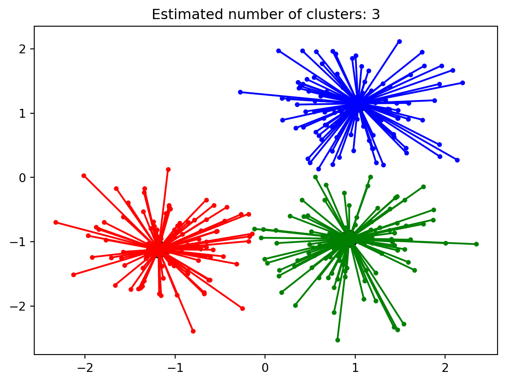

# Very simple python function and an expression
print("Hello World!")
1+1Hello World!2Metplotlib - Polar coordinate plot.
August 22, 2023
# load r packages, including reticulate
library(tidyverse)
library(reticulate)
# list current conda environments
conda_list()# Set conda environment to use
use_condaenv("pydata-book", required=TRUE)# Confirm the selected conda and python environemtn
py_config()# Run some strings of python codes.
py_run_string("import os as os")# package import and some data import
import numpy as np
import pandas as pd
arr = np.arange(1, 10)
print(type(arr))
arr
# data frame creation
df = pd.DataFrame(data = {"sequence":np.arange(1,20,.01)})
df
df = df.assign(value=np.sin(df["sequence"]))
df<class 'numpy.ndarray'>| sequence | value | |
|---|---|---|
| 0 | 1.00 | 0.841471 |
| 1 | 1.01 | 0.846832 |
| 2 | 1.02 | 0.852108 |
| 3 | 1.03 | 0.857299 |
| 4 | 1.04 | 0.862404 |
| ... | ... | ... |
| 1895 | 19.95 | 0.891409 |
| 1896 | 19.96 | 0.895896 |
| 1897 | 19.97 | 0.900294 |
| 1898 | 19.98 | 0.904602 |
| 1899 | 19.99 | 0.908819 |
1900 rows × 2 columns
Visualize the data frame using Matplotlib

from sklearn.ensemble import RandomForestClassifier
clf = RandomForestClassifier(random_state=0)
X = [[ 1, 2, 3], # 2 samples, 3 features
[11, 12, 13]]
y = [0, 1] # classes of each sample
clf.fit(X, y)RandomForestClassifier(random_state=0)In a Jupyter environment, please rerun this cell to show the HTML representation or trust the notebook.
RandomForestClassifier(random_state=0)
from sklearn.cluster import AffinityPropagation
from sklearn.datasets import make_blobs
# #############################################################################
# Generate sample data
centers = [[1, 1], [-1, -1], [1, -1]]
X, labels_true = make_blobs(n_samples=300, centers=centers, cluster_std=0.5,
random_state=0)
# Compute Affinity Propagation
af = AffinityPropagation(preference=-50).fit(X)
cluster_centers_indices = af.cluster_centers_indices_
labels = af.labels_
n_clusters_ = len(cluster_centers_indices)
# #############################################################################
# Plot result
import matplotlib.pyplot as plt
from itertools import cycle
plt.close('all')
plt.figure(1)
plt.clf()
colors = cycle('bgrcmykbgrcmykbgrcmykbgrcmyk')
for k, col in zip(range(n_clusters_), colors):
class_members = labels == k
cluster_center = X[cluster_centers_indices[k]]
plt.plot(X[class_members, 0], X[class_members, 1], col + '.')
plt.plot(cluster_center[0], cluster_center[1], 'o', markerfacecolor=col,
markeredgecolor='k', markersize=14)
for x in X[class_members]:
plt.plot([cluster_center[0], x[0]], [cluster_center[1], x[1]], col)
plt.title('Estimated number of clusters: %d' % n_clusters_)
plt.show()